本文主要记录了两种对傅里叶变换的直观理解，并比较其相似之处。
在网上看了一些有关傅里叶变换的视频，其中以3b1b 的视频以及 Zach 的视频最为直观且易于理解。他们两人是从不同的角度出发来解释傅里叶变换的意义的，其不完全相同但又有共通之处，因此在这里记录下来。
经过两人的讲解，我发现傅里叶变换的实际意义：可以将其想象成一种频率分离器。它提取频率的方法在于，其对不同的频率响应不同。对实际信号中存在的频率，其会产生一个幅值很大的响应。对信号中不存在的频率，其响应幅度就会很小。将不同频率的响应幅值作图，就是我们常见的傅里叶变换幅值图。
准确地说，傅里叶变换后的结果是一个复数，也就是，每一个频率 对应一个复数，我们可以根据此复数计算出幅值和相位。
3b1b 的解释
先写上傅里叶变换的公式
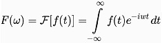
从中可以看出，原信号 乘了一个函数 . 根据欧拉公式，可以将 看作以频率 进行顺时针旋转。因而 可以被看作原信号 被以频率 缠绕在单位圆上。这正是 3b1b 想要解释的。
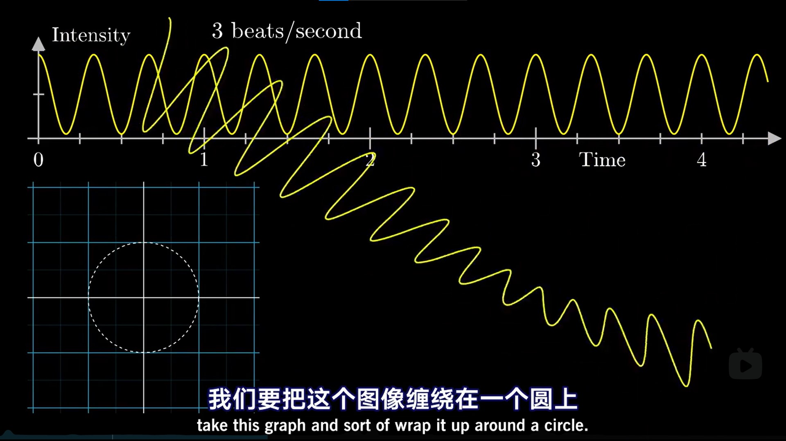
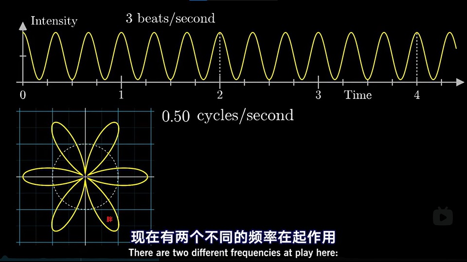
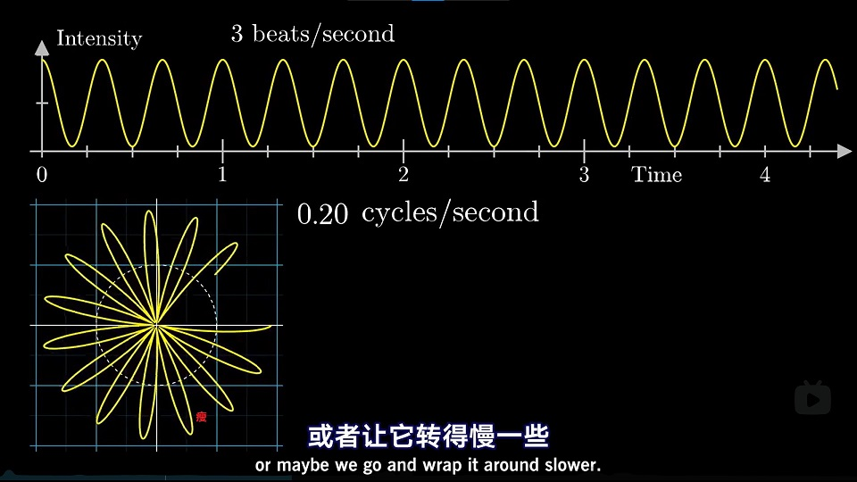
从图2和图3可以看出，同样频率的信号，可以以不同的频率缠绕在一个圆上。这个缠绕频率与信号本身的频率无关。当缠绕频率较小时，一个圆上可以缠绕更多周期的信号，因此信号看起来比较“瘦”。与之相反，缠绕频率较大时，信号看起来更“胖”。
尝试将原信号看作一个有质量的铁丝，并追踪缠绕后图像的质心。当缠绕频率 变化时，缠绕图像变化，其质心也不可避免地变换。
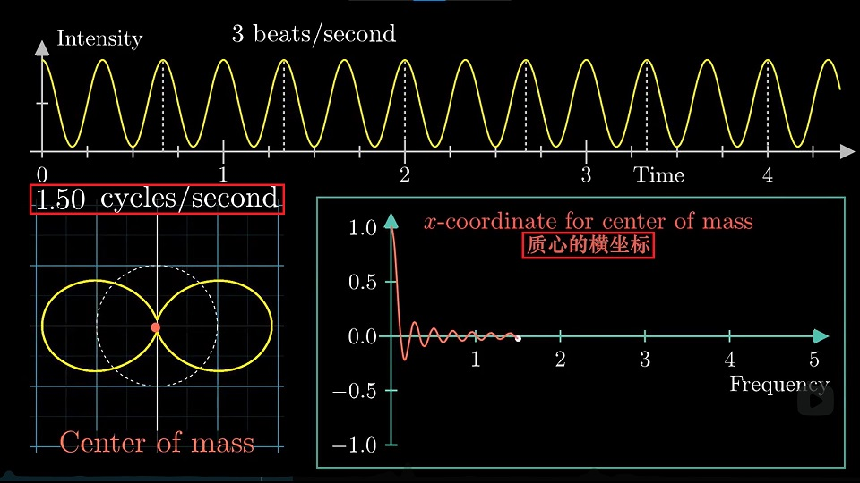
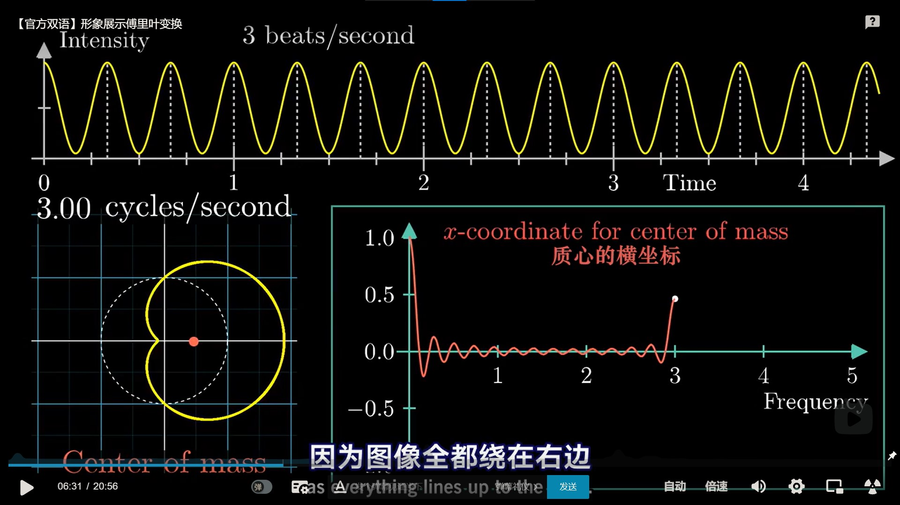
对比 图4 和 图5 可以发现，当缠绕的频率等于信号本身的频率时，其质心的横坐标会明显偏右，因此在缠绕频率和质心的图像上出现一个明显的尖峰。而根据这些尖峰，我们就能找到原信号里的频率。
在实际的傅里叶变换中， 是一个复数，可以看作质心在平面上的坐标。上面我们只跟踪了质心的横坐标，但是这里，我们跟踪它的横纵坐标。
在这里，质心的计算是通过积分来体现的。
这样，整个傅里叶变换公式都好理解了， 表示信号以频率 缠绕在圆上，而积分则表示计算缠绕后图像的质心。质心是分布在平面上的。因此 的输入是频率 , 输出是质心在平面上的位置，用一个复数来表示。
这里，我们计算质心的公式与实际的傅里叶变换公式有一点小区别，就是实际的计算公式在进行积分后就结束了，而实际的计算质心的公式多了个除以积分区间的部分，
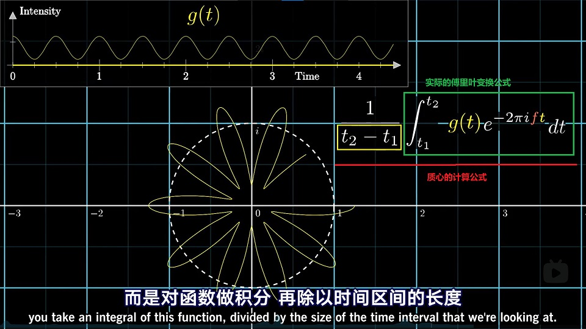
可以看出，质心计算公式比傅里叶变换公式多了个除以信号持续时间的部分。也就是说，傅里叶变换不仅追踪了质心，还将其根据持续时间进行了缩放。
Zach Star 的解释
Zach 首先将傅里叶变换公式中的 分解成 ，并将其带入原公式，进行适当的变形。这样，公式被拆分成两部分，可以将积分看作函数 和 与横坐标围成的面积。这样，对某个具体的 值，我们就能得到一个复数。
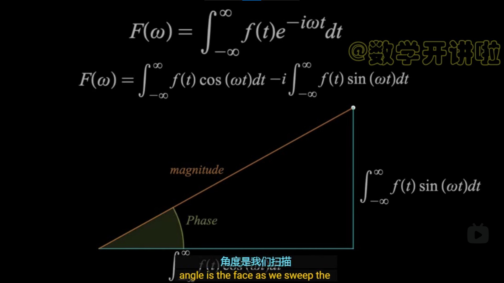
假设原信号 是一个方波函数，则其乘以 和 后的结果如下图所示
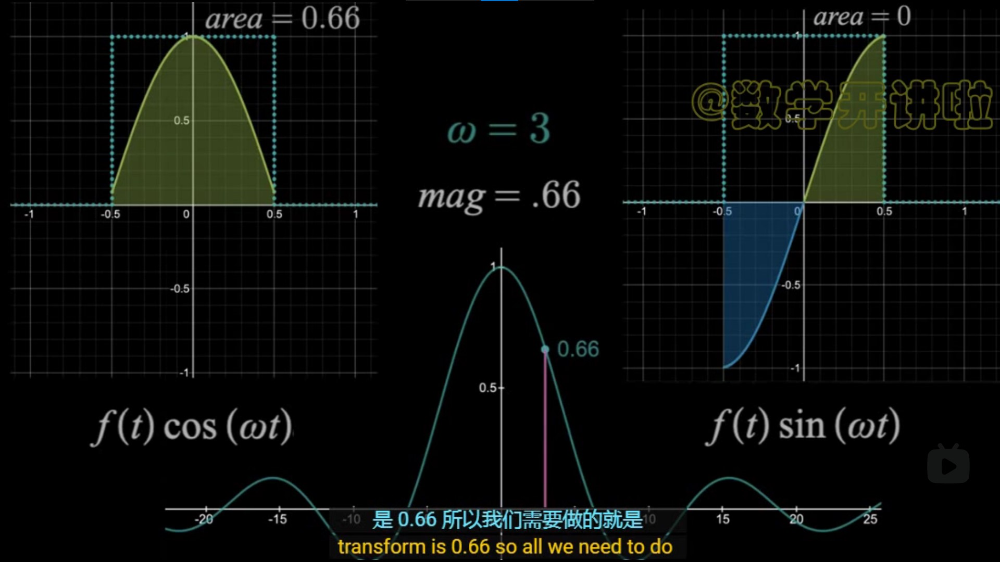
接下来，扫面每个可能的 值，并记录其对应的幅值。如下所示，
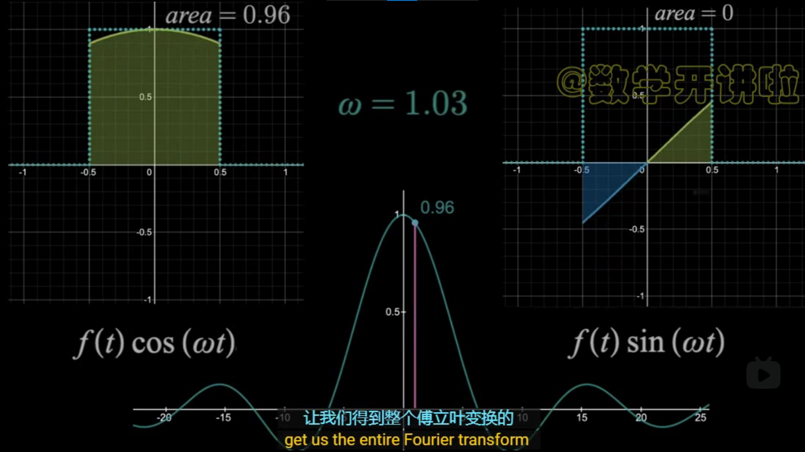
考虑另一种更复杂的函数， , 其幅值如下图所示
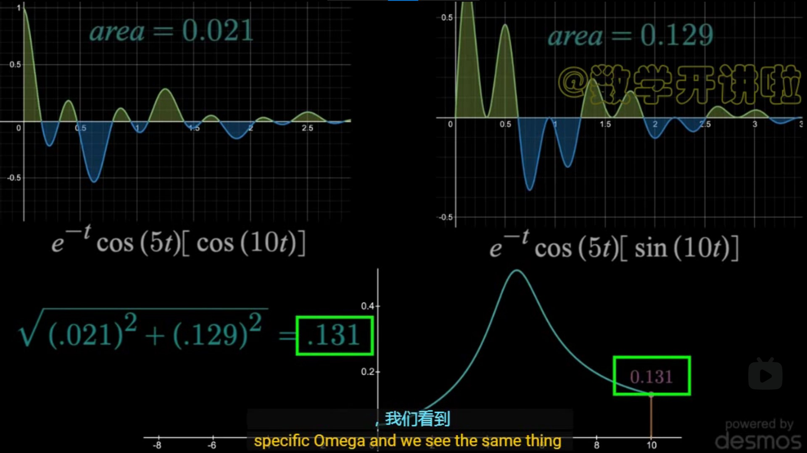
由于傅里叶变换有幅值和相位这两种指标，其各自代表的意义不太一样。其中，幅值可以近似看作两边的面积组合有多大，如下图所示
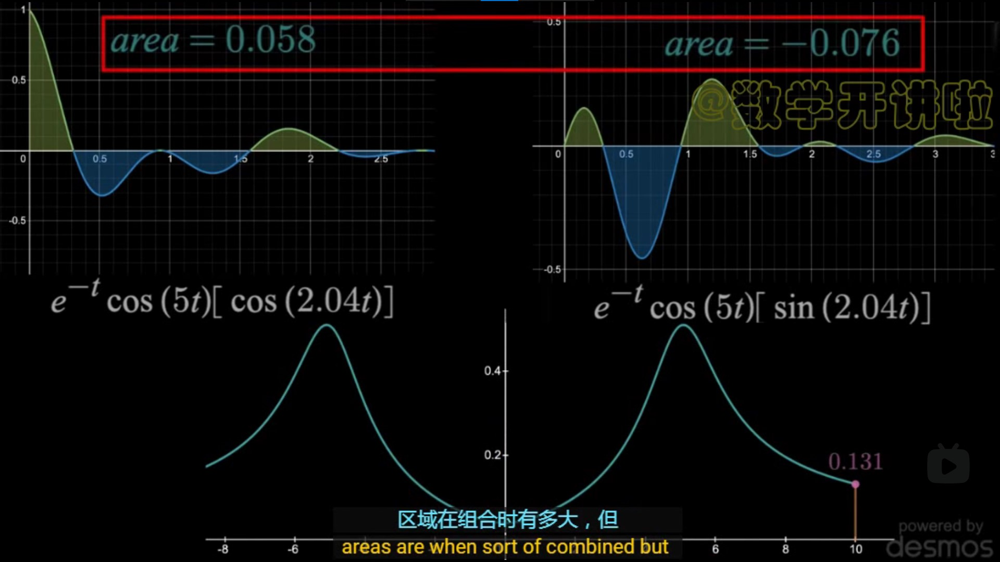
相位图告诉我们当对而言，哪边的面积更大，以及其中任意一个是否为负数。
接下来，考虑两个 函数相乘。这里将 这种面积随着 在 0 两侧波动的情况记为面积为 0. 因此， 这种两个 函数相乘的情况，其面积也是横轴上下互相抵消，记为 0 的。
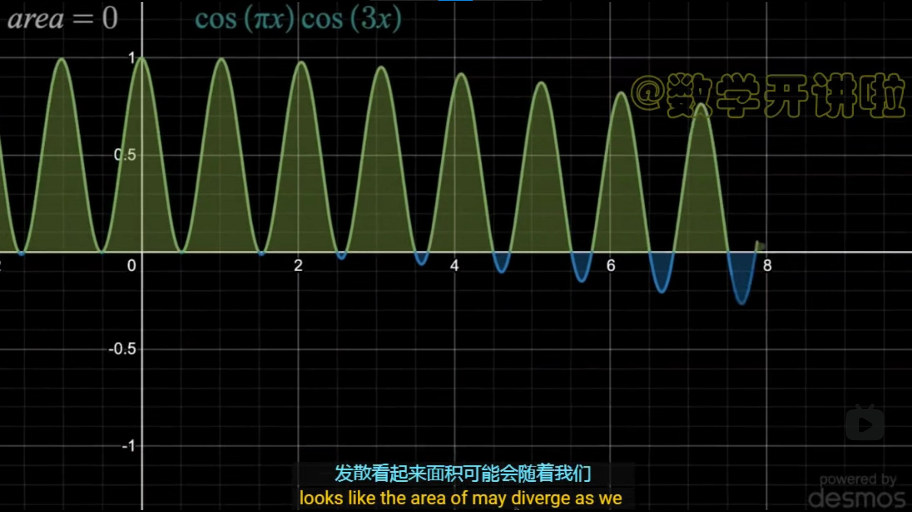
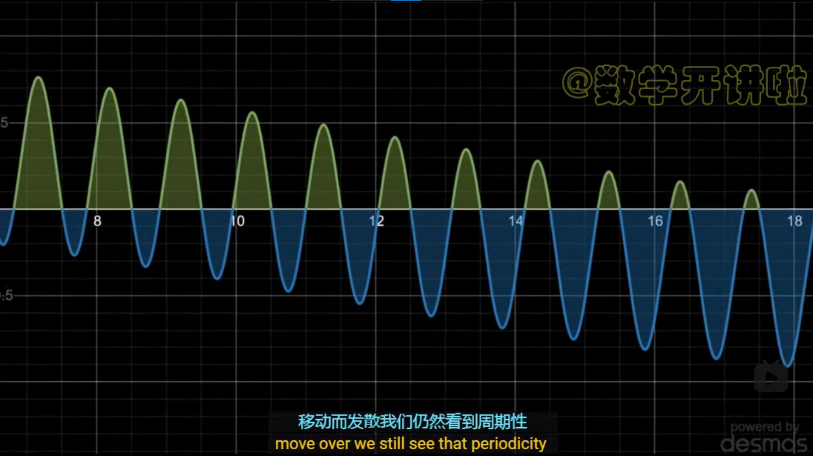
只有在两个函数周期相同的时候，其与横轴围成的面积变成 .
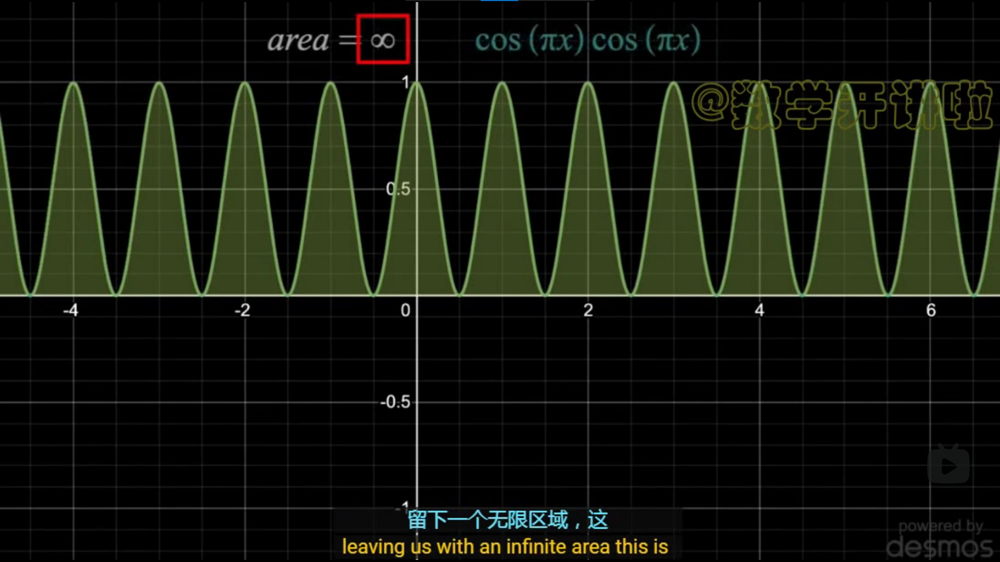
因此，当我们求 函数的傅里叶变换 时，其分为两部分，一部分为 , 另一部分为 。可以发现， 是关于原点对称的，因此其面积一直为 0. 这样，当 时，值会变成 . 这样，我们就可以通过记录所有的 值以及其对应的面积，来分解出原信号中的频率。
这不仅对有限多个 函数组成的函数成立，其对更为复杂的函数同样成立。比如一个周期方波函数，
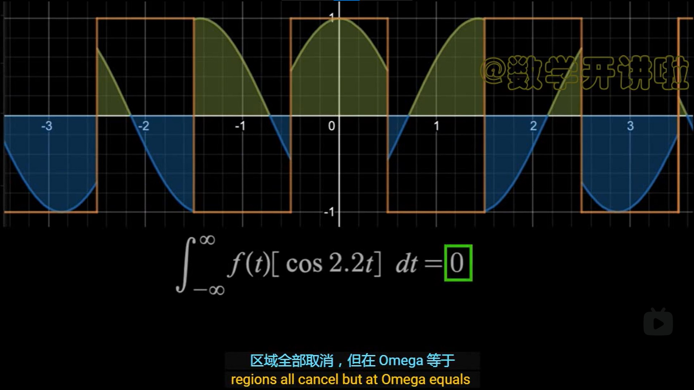
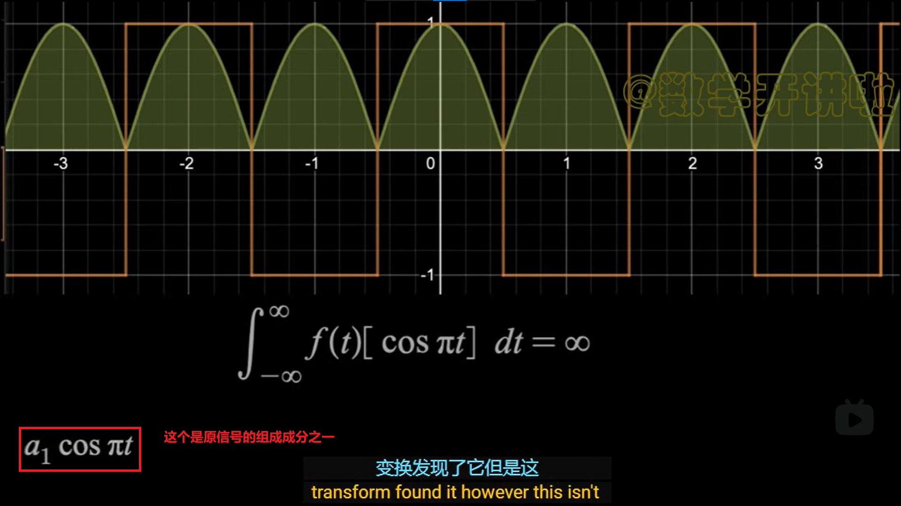
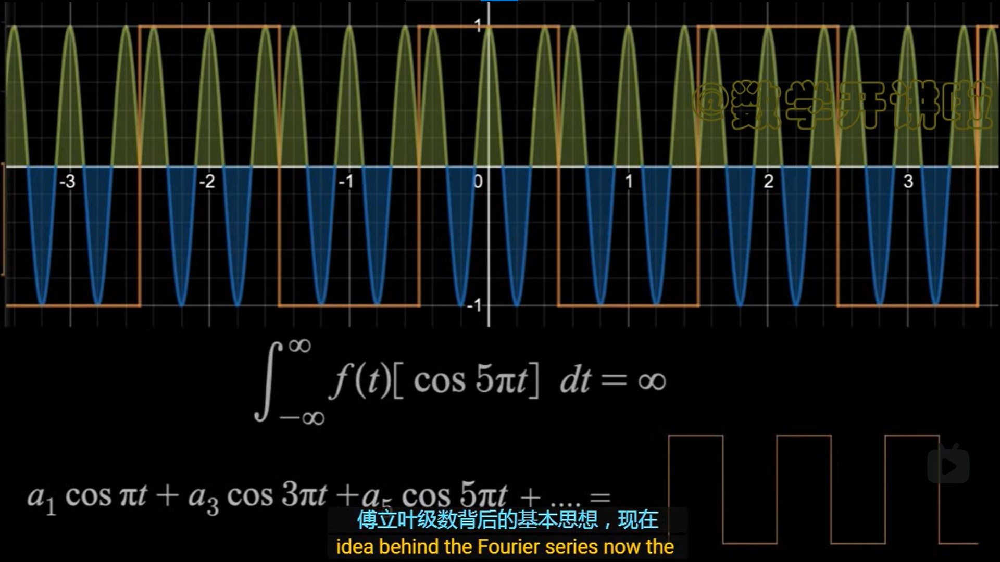
上面所讨论的输入都是周期函数。针对非周期函数，比如一个非周期方波函数，我们发现当 时，其面积为 0.66. 这里就与上面周期函数 0 或者 不同，（因为 的面积是 ）其是一个有限的非零值。为了将面积做成有限的非零值，我们将 设为一个无限接近 0 的数，这样， 的面积为 0.66. 这可以通过将 设为一个无限小的值而达到。同样的，对其他任意 , 都会出现面积为一个有限非零值的情况，操作方式与 时一样。
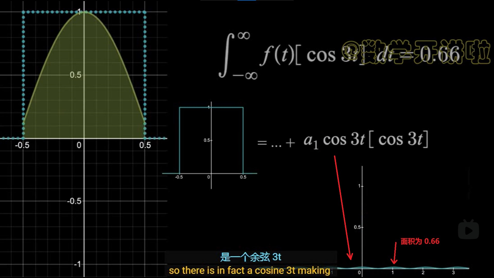
拓展：拉普拉斯变换和傅里叶变换的关系
一句话概括，傅里叶变换就像一个频率扫描器，其扫描出信号中的组成频率。而拉普拉斯变换除了扫描频率，还扫描信号中的衰减指数。
分析的过程同样可以用面积来思考。
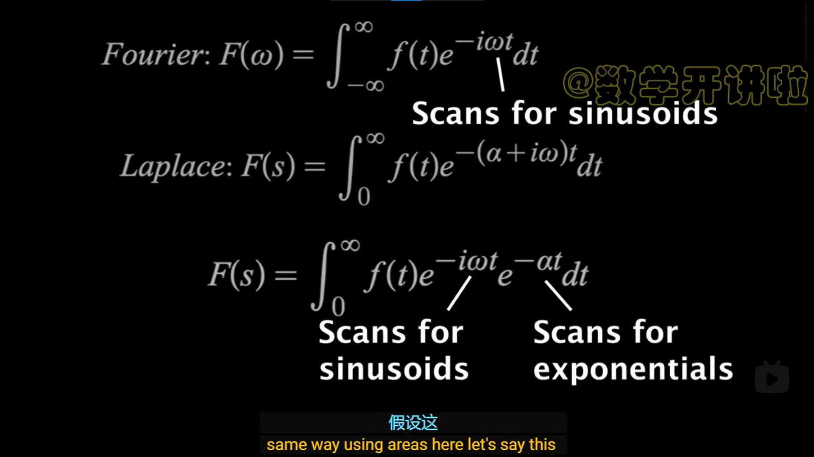